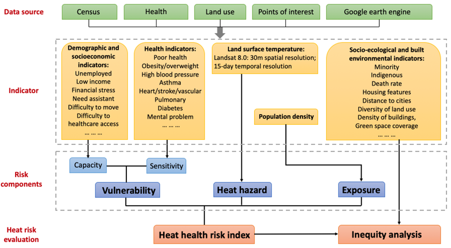

Extreme heat, also known as the silent killer that conceal its lethal effect behind heat-related deaths, has become one of the deadliest natural hazards globally. However, the evaluation of heat risks in many countries remains incomplete, overlooking an important component on population health conditions in the evaluation framework. Drawing on the IPCC’s risk assessment framework, this study presents, for the first time, a comprehensive heat health risk assessment in Australian capital cities, consisting of three individual indexes—the heat exposure index, heat hazard index and heat vulnerability index—at the finest census unit, and an overall heat health risk index (HHRI). By involving health-related indicators in heat risk assessment, our evaluation takes into account people’s sensitivity to heat in developing the heat health risk indexes. Using the HHRI, we identify high heat risk areas appearing primarily in higher density residential areas with some distances away from the inner cities. We also examined the spatial inequity in HHRI in areas with different demographic and socioeconomic characteristics, housing features, and built environment features. Our findings contribute not only to profiling heat risks in Australian cities, but also empirically advance our understanding of place-based risk reduction in the Southern Hemisphere by linking climate science with health and spatial science research.
